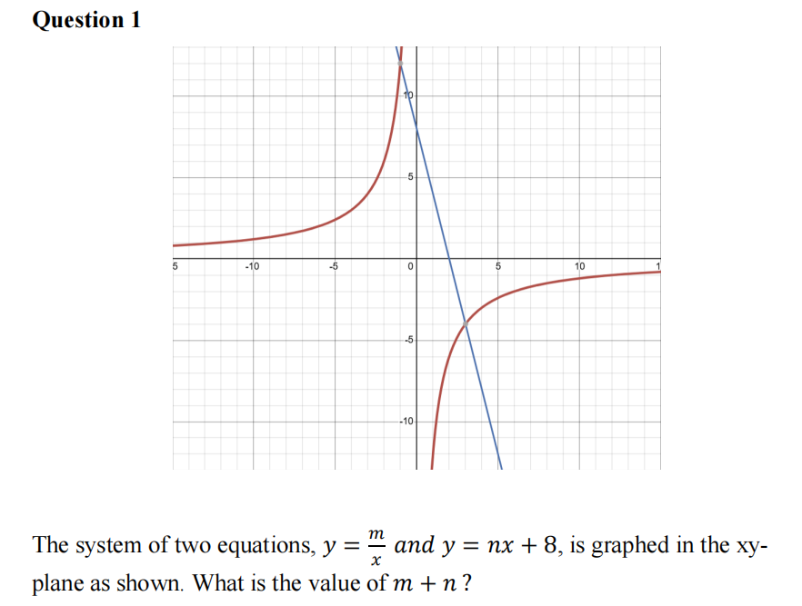

The system of two equations, \( y = \frac{m}{x} \) and \( y = nx + 8 \), is graphed in the xy-plane as shown. What is the value of \( m + n \)?
 Your Answer:The functions h and f are defined by \( h(x) = -\frac{3}{5}x - 12 \) and \( f(x) = -2x^2 + 8x - 6 \). What is the value of \( h(f(-2)) \)?
If \(-12x + 8 = 36\), what is the value of \(4 - 6x\)?
John is raising m dogs and n cats. Each three dogs require 6 liters of water and each four cats require 12 liters of water every day. The m dogs and n cats require a total of 36 liters of water every day. Which equation represents this situation?
The function \( f(x) = -\frac{1}{2}(x-4)^2 + 18 \) gives a basketball’s height above the ground f(x), in meters, x seconds after it is launched, where \( 0 \leq x \leq 10 \). Which of the following is the best interpretation of the vertex of the graph of y = f(x) in the xy-plane?
Which expression is equivalent to \( (2k - 7)(-k - 2) \)?
Data set A: 2, 2, 2, 5, 5, 8, 11, 11, 14, 14, 14
Data set B: 2, 5, 5, 8, 8, 8, 8, 11, 11, 14
Data set A and B each have 11 values. Which of the following statements best compares the standard deviations and means of data set A and data set B?
In the xy-plane, the graph of the equation \(-3x + 8y = 18\) is translated 3 units right and 5 units up. Which of the following is an equation of the resulting graph?
A chemist mixed x liters of 5% saline solution with 20 liters of 40% saline solution to produce a 12% saline solution. What is the value of x?
Your Answer:The floor of a school is in a square shape and has an area of 2,025 square meters. An architect creates a scale model of the floor of the school, where the length of each side of the model is 1/15 times the length of the corresponding side of the actual floor of the school. What is the length of one side, in meters, of the scale model?
\( 2x^2 - 10x + 2y^2 + 18y + c = 0 \)
In the xy-plane, the graph of the given equation is a circle. If this circle has a radius of 6, what is the value of c?
\( C(t) = 135 \left( \frac{44}{33} \right)^{t-13} + 8 \)
The function C gives the estimated number of cephalopods... How many months after the study began was the number of cephalopods in the area estimated to be 143?
\( \frac{1}{8}x - \frac{4r}{9}y = -32 \)
One of the equations in a system of two linear equations is given, where r is a nonzero constant. The system has no solution. If the other equation in the system is graphed in the xy-plane, what is the slope of the graph?
A machine makes 8-inch, 9-inch, and 3-inch parts. During a certain day, the number of 3-inch parts that the machine makes is 6 times more than the number n of 8-inch parts, and the number of 9-inch parts is 50. During this day, the machine makes a total of 154 parts that have a total length of 827 inches. Which of the following equations represents this situation?

−32x + 18y + 150 = 15y + 4x
52 + w/3 x + 18y = −32
In the given system of equations, w is a constant. The system has only one solution. Find the value that w is not equal to.
Your Answer:
A researcher surveyed undergraduate students, graduate students, and postdoctoral students. The number of undergraduate students surveyed was 6,750% of the number of postdoctoral students surveyed, and the number of graduate students surveyed was 60% of the sum of the number of undergraduate and postdoctoral students surveyed. If there were 12,330 graduate students surveyed, what was the positive difference between the number of undergraduate students and postdoctoral students surveyed?
Your Answer:
Ali earns $25 per hour for the first 30 hours worked in a week, and for each hour worked over 30 hours, he earns $35 per hour. John earns $27 per hour for the first 25 hours worked in a week, and for each hour worked over 25 hours, he earns $32 per hour. If both of them work the same number of hours, what is the least whole number of hours that Ali has to work to earn at least $100 more than John in a week.
Your Answer:There is a system of three linear equations, f(x) = −6 , x = k and g(x) = −(5/2)x + c, where k and c are constants. If x = k and g(x) = −(5/2)x + c intersect at the point (-5, -2), what is the area of a shape formed by the intersection of these three equations?